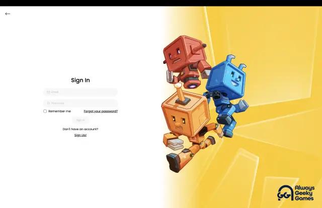

Context
The surfaces included a marketplace, authentication, product, and account experiences, all in Next.js on top of the shared library, documented in Storybook and integrated over GraphQL. Alongside the product work, we ran an AI-assisted development workflow using Cursor with MCP tooling, so the same lint, type, and test signals engineers saw in CI were available in the editor.
- Four Next.js product surfacesMarketplace, authentication, product, and account experiences, integrated over GraphQL.
- Shared React and TypeScript libraryComponents with explicit states and escape hatches, used across every surface.
- Storybook documentationWhere each component's contract and the states it is responsible for are written down.
- Frontend conventionsComponent API shape, accessibility defaults, TypeScript rules, and what reviewers push back on.
- CI quality gatesHold the library and the product surfaces to the same baseline.
Each layer restates the same contract a level lower, so drift gets caught before it depends on a reviewer remembering.
Problem
Marketplace and account flows drift into one-off implementations the moment speed beats shared contracts. Four surfaces multiply that: the same empty state gets invented four times, accessibility gets handled well in one and forgotten in the others, and nobody notices until the library and the products disagree.
One-offs per surface
- The same empty state gets invented four times
- Accessibility handled well in one surface and forgotten in the others
- The library and the products disagree before anyone notices
- Conventions live only in reviewers' heads
Approach taken Shared library with gates
- Loading, empty, and error states defined once and reused
- Accessibility defaults built into shared components
- Storybook documents each component's states and API
- CI gates enforce the baseline instead of reviewer memory
Four surfaces multiply every inconsistency, so the shared contract has to be easier to use than writing a one-off.
My role
- Owned the React and TypeScript component library used across all four surfaces.
- Established the frontend conventions the surfaces were built to: component API shape, accessibility expectations, TypeScript rules, and what reviewers were expected to push back on.
- Evolved the Storybook documentation so components were discoverable enough that reuse was the easier path.
- Wrote the design docs for library and convention changes, and drove their adoption across the teams building the four surfaces.
- Mentored engineers on component API design, accessibility, and TypeScript patterns through pairing and code review.
- Shipped marketplace, authentication, product, and account workflows with consistent loading, empty, and error handling.
- Worked on the Cursor and MCP setup so editor feedback lined up with the checks CI already ran.
What I built
- Shared React and TypeScript components used across the marketplace and account surfaces.
- Storybook documentation covering component usage and the states each one is responsible for.
- Workflow UI for catalog browsing, login, and account-access states.
- CI quality gates that held the library and the product surfaces to the same baseline.
Technical decisions
Decision 1
Treat component APIs as the contract, and Storybook as where that contract is written down, rather than as documentation produced after the fact.
- Why
- A component used on four surfaces is an interface other engineers depend on. If its states and escape hatches aren't explicit, each surface fills the gaps differently.
- Trade-off
- Codifying a pattern is slower than writing the screen in front of you, and every component gains maintenance weight.
- Result
- The library stayed close to the surfaces it was meant to serve instead of becoming a parallel set of components nobody reached for.
Decision 2
Put the design-system baseline behind CI gates instead of relying on reviewers to remember it.
- Why
- Conventions that only live in people's heads decay as soon as the team is busy, and review attention is the scarcest thing on a small frontend team.
- Trade-off
- Gates add friction on individual screens, and a gate that fires too often gets routed around.
- Result
- Standards work stayed enforceable rather than aspirational, and review time went to design decisions instead of catching lint-level drift.
Decision 3
Wire the AI-assisted workflow through MCP tooling that runs the same lint, type, and test commands as CI.
- Why
- Editor-level AI assistance is only useful if its feedback matches what will actually block the pull request.
- Trade-off
- Maintaining the tooling is real work, and it only pays off if the underlying scripts stay the single source of truth.
- Result
- Assisted development stayed anchored to the project's real quality signals instead of to a model's guess about them.
- Build in editorEngineers work against the shared library with Cursor and MCP tooling.
- Editor checksMCP tooling runs the same lint, type, and test commands CI runs.
- CI quality gatesThe same scripts block the pull request when the baseline breaks.
- Code reviewWith lint-level drift already caught, review time goes to design decisions.
Loop The underlying scripts stay the single source of truth, so editor feedback and CI cannot drift apart.
Assisted development is only useful when its feedback matches what will actually block the pull request.
UX and detail decisions
- Kept loading, empty, and error states consistent across product surfaces instead of letting each workflow invent its own patterns.
- Used accessibility improvements such as semantic structure, keyboard support, and clearer state messaging where the product surfaces required it.
- Treated authentication and recovery UI as part of the same system as the main marketplace experience.
Interface evidence




Outcome
- A component baseline four product surfaces were built on, with the conventions and gates that kept them aligned.
- Closer agreement between Storybook documentation, shipped UI, and what CI actually enforced.
- Better accessibility, responsive behaviour, API integration, and testing standards across the surfaces, plus an AI-assisted workflow tied to the project's real checks.
What I would improve
- Expand product-level regression coverage around key marketplace paths so system-level changes are easier to validate.
- Document more workflow-specific usage guidance inside Storybook as the shared system grows.